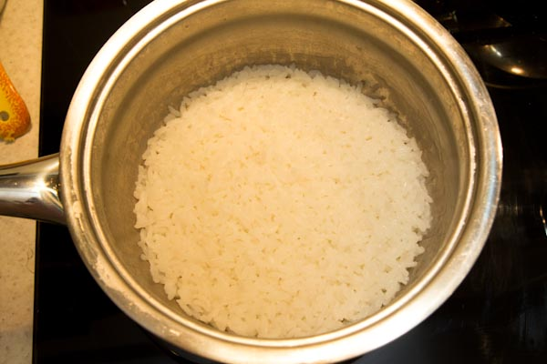
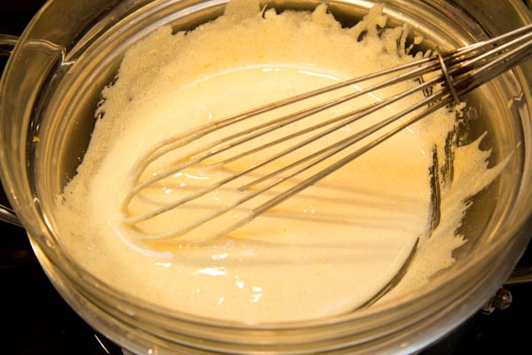
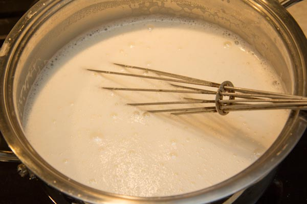
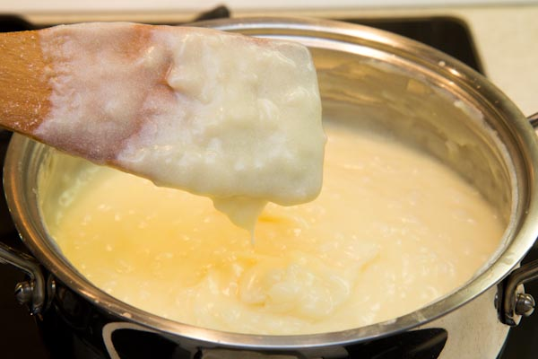
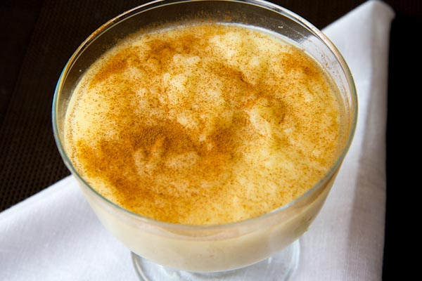
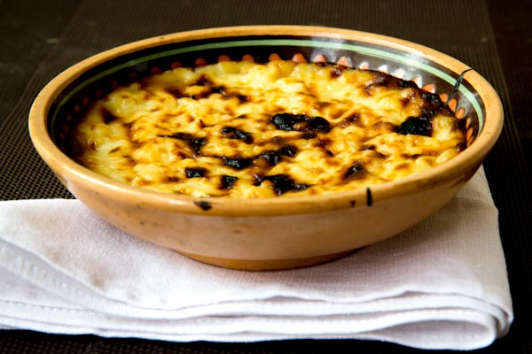

У разных народов есть похожие блюда. Ингредиенты, внешний вид, способ подачи — все на одно лицо, только названия зачастую отличаются. И не удивительно — люди давно и много перемещаются в пространстве: завоевывая новые земли, переселяясь в поисках лучшей жизни, путешествуя ради удовольствия, навещая родных и друзей. А вместе с ними — знания и умение готовить любимые или быстрые блюда. Некоторые рецепты кочуют по миру в качестве сувениров. Каким бы образом секреты приготовления блюд не перемещались из страны в страну, практически в ста процентах случаев новые кушанья быстро ассимилировались и становились местными деликатесами. Вслед за этим между народами часто возникали споры относительно того, кому же принадлежит авторство блюда — каждый пытался присвоить его себе. Сегодня же подобные вопросы мало кого заботят, а многие повара — и профессионалы, и любители — активно используют кулинарный опыт других стран. Ведь суть блюда, не в том, кто его придумал, она в гармонии сочетания вкусов. Например, молочно-рисовый пудинг (сютлач), еще известен как британский десерт.
Приготовим сегодня традиционный турецкий десерт SÜTLAÇ. Настоящий турецкий сютлач бывает двух видов – просто сютлач и сютлач, обожженный в духовке.
1 л. молока
400 мл воды
3 ст. л. риса
1 ст сахара 3 ст. л. крахмала
2 яичных желтка немного ванилина
Рис промыть и отварить в 300 мл воды.
Желтки взбивать с сахаром на водяной бане до светлой пены (масса увеличится в объеме в несколько раз).
Молоко нагреть. Постепенно добавить половину молока в желтковую массу, после перелить желтково-молочную массу в оставшееся молоко.
Молоко с сахаром и желтками на небольшом огне довести до кипения . Добавить рис, ваниль и разведенный в 100 мл воды крахмал. Довести до кипения и снять с огня.
Теперь все зависит от того, какой из рецептов вы выбрали.Если вы хотите просто турецкий сютлач , то вам остается только разлить содержимое кастрюли по пиалам (этого количества хватает на 6 порций) и , остудив, поставить в холодильник. Турецкий сютлач всегда едят холодным, присыпав сверху небольшим количеством корицы. 
Если же вы готовите турецкий сютлач обожженный в духовке, то Вам нужно разогреть духовку до 200 градусов. Заполненные пиалы сложить на противень и налить воды. Это нужно для того, чтобы влага не выпаривалась из самого сютлача. Запекать 15минут и еще на 5 минут поставить под гриль. Содержимое пиал покроется местами горелой корочкой. Обожжённый сютлач также следует остудить. Вкуснее он холодным.
